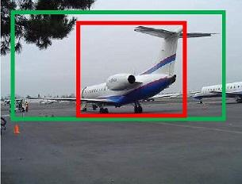

关于作者
关于作者
Fast RCNN
针对RCNN的问题，Fast RCNN使用一个网络统一了特征提取，分类，回归三个步骤。 不再需要对每个候选区域进行单独的特征提取和分类，而是可以在一个前向传播中同时处理所有的候选区域，从而大大提高了训练和测试的速度。
整体结构
网络的整体结构如下图所示

1、对输入图像进行卷积神经网络的前向传播，以得到图像的特征图。
2、对每个候选区域进行 RoI 池化操作，以得到每个区域的特征向量。
3、将每个特征向量送入一组全连接层中，以得到每个区域的类别和位置信息。
4、对每个区域的类别和位置信息进行损失计算，并将两个损失相加，以得到总的损失。
特征提取
RCNN是对每一个特征图使用网络提取特征，这样会导致非常多的冗余计算。因此Fast RCNN对整张图像输入网络计算特征。 然后将SS算法得到的坐标信息对应到特征图上截取特征表示。这一步的默认前提是：图像经过网络提取特征后对应的空间信息没有变化。
由于提取的特征不是相同的尺寸，因此使用ROI层得到统一维度的特征向量
ROI池化
如下图所示,
RoI最大池化层首先将原来W x H尺寸的窗口划分为m x n的网格大小，然后在每个小格子范围内通道独立的做最大池化得到 维度为m x n x C的特征。
它的好处是无论输入尺寸是什么样的，都可以得到相同维度的输出。且避免了拉伸对图像带来的扭曲。
检测头
Fast RCNN在获得ROI的输出后，通过全连接提取特征，然后输入两个并行层得到分类和回归结果。其中分类层由全连接和softmax组成，softmax得到(n+1)个输出，其中n表示类别。1表示前后背景。 回归层得到输出边框回归的偏移量，对每个类k都输出四个偏移量。
损失函数
分类枝干的损失函数表示为
其中p表示网络预测值，u表示标准输出类别。
回归枝干的损失函数表示为：
之前提到回归对每个k输出4个偏移量，在计算回归损失时只使用标准输出类别的那四个偏移量。smooth L1 loss表示为
$$
smooth_{l1}(x) = \left{\right.
$$
总的loss为
其中表示gt为背景类的话不计算他的损失函数， 用于权衡两者损失，一般置1。
边界框回归原理
在RCNN中提到边界框回归，但没有细讲他是怎么实现的。现在我们仔细介绍一下具体是怎么实现的。

如上图所示，绿色框为飞机的gt，红色为预测的positive anchor。但由于红框定位不准，如果iou过低会当作负样本。 因此现在希望对红框进行微调，使他和GT更接近。
现在我们利用一个四维向量(x,y,w,h)定义一个窗口，分别表示窗口的中心坐标、宽和高。 如下图所示，我们希望找到一种关系，使得输入原始的anchor A经过映射得到一个跟真实窗口G更接近的回归窗口 。

- 定义原始框
- 定义目标框
- 定义回归后的框为
- 寻找一种变换F。 使 接近 G $$
F应该怎么映射呢？简单的想法是先平移，在缩放。
- 平移x：
- 平移y：
- 缩放w：
- 缩放h：
所以，我们需要学习四个变换。当且仅当anchor A和GT相差较小时，可以认为这种变换是一种线性变换， 那么就可以用线性回归来建模对窗口进行微调。
现在我们利用线性回归，给定输入网络的特征图，定义为,线性映射权重为,映射结果为。用*表示{x,y,w,h},则映射关系可以表示为
又目标为， 所以可定义损失函数L1 loss 为：
为了方便描述，这里以L1损失为例介绍，而真实情况中一般使用smooth-L1损失。
那目标映射关系又是怎么来的呢？可以通过